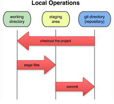

Git, GitHub
Andy Robinson May 2019
In programming, typically a group of developers will share code to complete a project, and split up the work.
They do this using a version control system (VCS). The VCS we're using/learning is GitHub, not to be confused
with Git. Git is the program used on the computer, GitHub is the software that stores the data on the cloud.

Steps for Git
-
sudo apt update
-
sudo apt install git
-
git init
git status
-
touch .gitignore
-
nano .gitignore
-
git add -A
-
git status
-
git reset
-
git commit -m "Initial Commit"
-
git clone https://github.com/AndrewR3/andyr.git .
-
git remove -v
- origin git clone https://github.com/bored178/VCS_bodenr (fetch)
- origin git clone https://github.com/bored178/VCS_bodenr (push)
-
git diff
-
git remote add origin https://github.com/AndrewR3/VCSpractice.git
-
git pull origin master --allow-unrelated-histories
warning: no common commits
remote: Enumerating objects: 8, done.
remote: Counting objects: 100% (8/8), done.
remote: Compressing objects: 100% (6/6), done.
remote: Total 8 (delta 0), reused 0 (delta 0), pack-reused 0
Unpacking objects: 100% (8/8), done.
From https://github.com/AndrewR3/VCSpractice
* branch master -> FETCH_HEAD
* [new branch] master -> origin/master
error: Your local changes to the following files would be overwritten by merge:
projects/vcs/vcs.html
projects/w3mag.html
Please commit your changes or stash them before you merge.
Aborting
Always do this before pushing (I guess...)
-
git push origin master
Username for 'https://github.com': AndrewR3
Password for 'https://AndrewR3@github.com':
To https://github.com/AndrewR3/VCSpractice.git
! [rejected] master -> master (non-fast-forward)
error: failed to push some refs to 'https://github.com/AndrewR3/VCSpractice.git'
hint: Updates were rejected because the tip of your current branch is behind
hint: its remote counterpart. Integrate the remote changes (e.g.
hint: 'git pull ...') before pushing again.
hint: See the 'Note about fast-forwards' in 'git push --help' for details.
- Git sometimes doesn't work properly